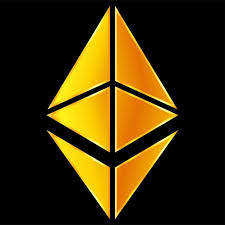
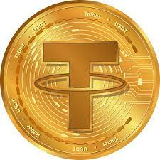

__
BITCOIN
O Bitcoin é a primeira criptomoeda descentralizada, criada em 2009. Funciona sem necessidade de intermediários e tem um suprimento limitado de 21 milhões de unidades. Ganhou popularidade como meio de investimento e pagamento, apesar de sua associação inicial com atividades ilícitas.
ETHEREUM

O Ethereum é uma plataforma de blockchain lançada em 2015, criada por Vitalik Buterin. Destaca-se por suportar contratos inteligentes e aplicativos descentralizados, operando com sua própria criptomoeda chamada Ether. Amplamente utilizado para desenvolver aplicativos descentralizados em setores como finanças, jogos e identidade digital
TETHER

Tether (USDT) é uma criptomoeda "stablecoin" que busca manter um valor estável em relação ao dólar dos Estados Unidos, embora tenha enfrentado críticas por preocupações com transparência e manipulação de mercado. Ainda assim, é amplamente usada por traders devido à sua suposta estabilidade no mercado de criptomoedas.
USD COIN
A USD Coin (USDC) é uma stablecoin vinculada ao dólar americano (USD) em uma proporção de 1:1. Amplamente utilizada em exchanges de criptomoedas e DeFi, oferece estabilidade de valor para transações eficientes no mercado de criptomoedas.